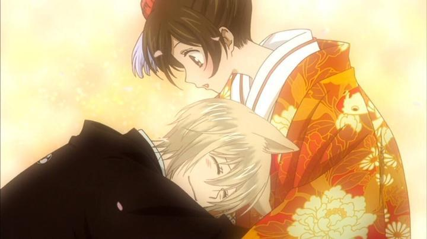

|
| bilibili | ||||||
| 曾经有一个人类的女孩对我说过“我很快乐”然而我却根本无法快乐，看着她十分满足的表情，我想到有一天奈奈生是否也会这样对我说。 我是否也会就像这样只能静静的看着你我就无法忍受，所以我才……下定决心要能够和你一起回忆过去然后说我很快乐，想必这就是所谓的一起活下去吧！ ----巴卫 | ||||||
| 人之所以能够开始许多段感情，是因为人的心会变，人类的寿命，短到没有时间，为一件执着的事停下脚步。 但是妖怪不同，寿命极长的他们，心意无法动摇，也绝不会忘记，能够几百年都怀抱着同一种的心情活下去，所以他们不会轻易动心。 一生都不会爱上任何人的妖怪也很多，仅仅是这样对妖怪来说风险就很高了。 ----御影 | 要前进必须要靠人类自己，只要有前进的意志，即使是很小的力量也能促使其前进，你的工作只是在背后推上一把而已。 | 来 走吧， 这誓言来自于深深的羁绊， 一段缘分兜兜转转， 相系相缠， 终于凝结成了羁绊， 大家一起去见证这份羁绊吧。 |
| 关注作者: xxxxxxxxxx@qq.com |